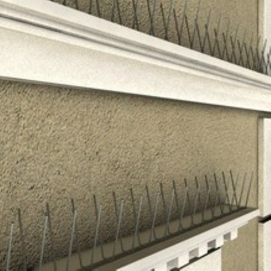
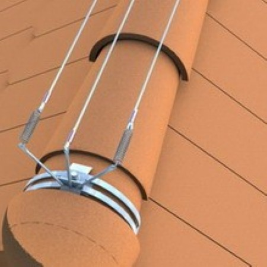
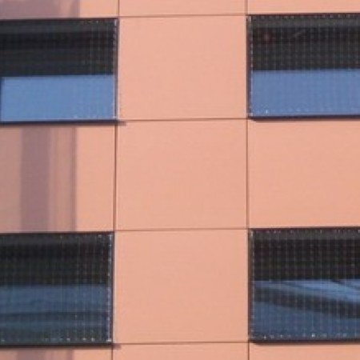
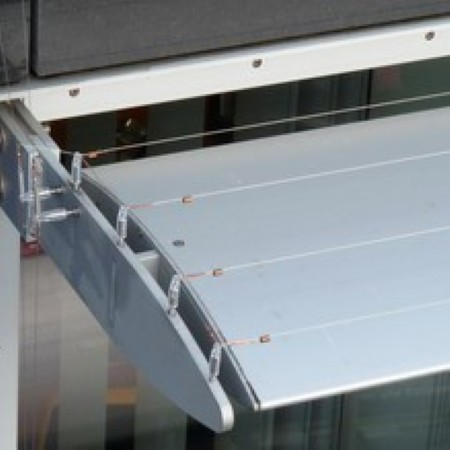
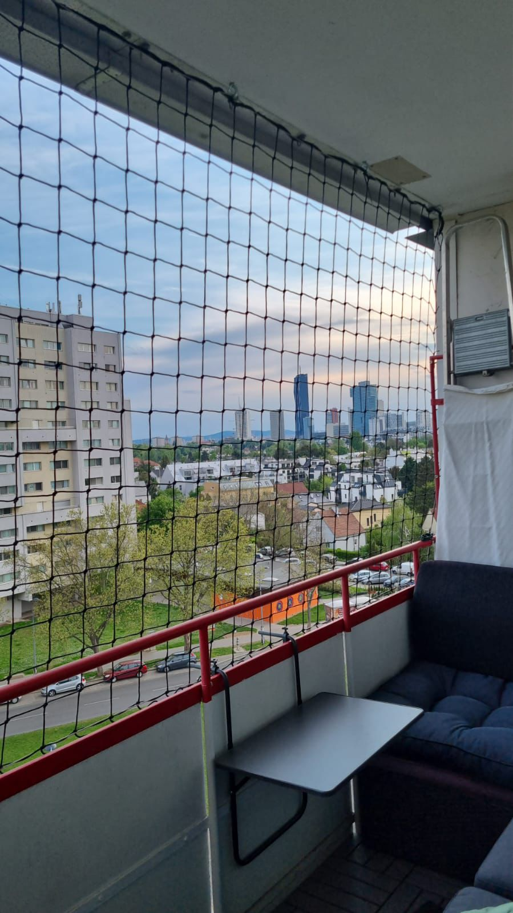

Aggressiver Kot
Greift Fassaden, Stein, Metall, Schilder und andere Oberflächen an.
Basic Taubenabwehr schützt Fassaden, Dächer, Innenhöfe, Balkone und Gewerbeflächen vor Verschmutzung, Nistplätzen und Materialschäden.
Tauben suchen geschützte Vorsprünge, Nischen, Balkone, Dachbereiche und Fassaden. Ohne Schutz entstehen schnell Schmutz, Geruch, Materialschäden und hohe Reinigungs- oder Sanierungskosten.
Greift Fassaden, Stein, Metall, Schilder und andere Oberflächen an.
Nischen, Dachböden und Vorsprünge werden schnell dauerhaft besetzt.
Renovierung, Reinigung und Instandhaltung werden ohne Schutz teurer.
Verschmutzte Gehwege, Balkone und Eingänge wirken ungepflegt und riskant.
Jedes Gebäude ist anders. Deshalb wird der Schutz passend zu Fassadenform, Nistplätzen, Zugänglichkeit und Befall geplant.

Robuster Schutz für Fensterbänke, Mauervorsprünge, Gesimse und Träger.
Mehr erfahren →
Dezenter Schutz für Fassaden, Gesimse und architektonisch sensible Bereiche.
Mehr erfahren →
Großflächiger Schutz für Innenhöfe, Hallen, Dachböden und offene Gebäudebereiche.
Mehr erfahren →
Sehr wirksame Lösung für anspruchsvolle Fassaden, Dächer und stark belastete Bereiche.
Mehr erfahren →
Ergänzende Maßnahme zur akustischen Abschreckung in bestimmten Bereichen.
Mehr erfahren →
Top Schutz für einen friedlichen Balkon.
Mehr erfahren →
Schutz für Photovoltaikanlagen, Dächer und Bereiche unter Solarmodulen.
Mehr erfahren →Der Ablauf bleibt bewusst einfach: Problem zeigen, Lösung abstimmen, fachgerecht montieren.
Kurze Beschreibung, Adresse und wenn möglich Bilder der betroffenen Stelle senden.
Je nach Objekt werden Spikes, Netze, Spanndraht-, Elektro- oder Ultraschallsysteme empfohlen.
Die gewählte Lösung wird sauber und objektgerecht montiert.
Schicken Sie eine Anfrage mit kurzer Beschreibung des betroffenen Bereichs.